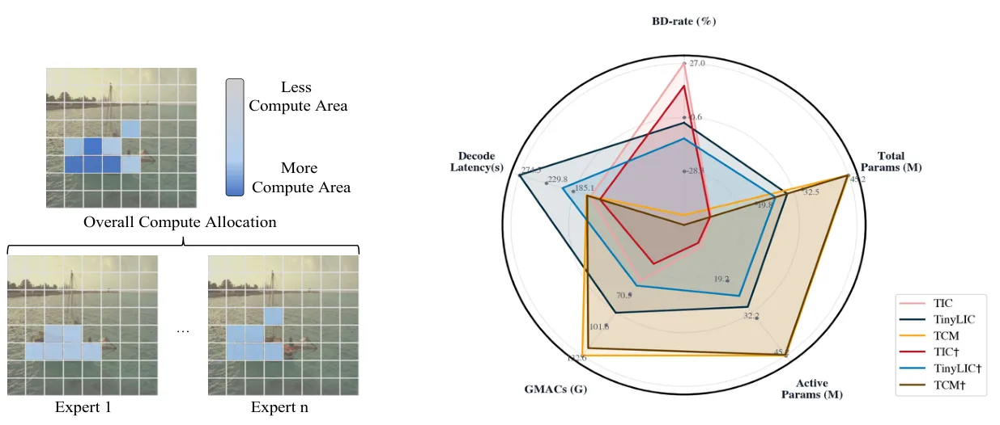
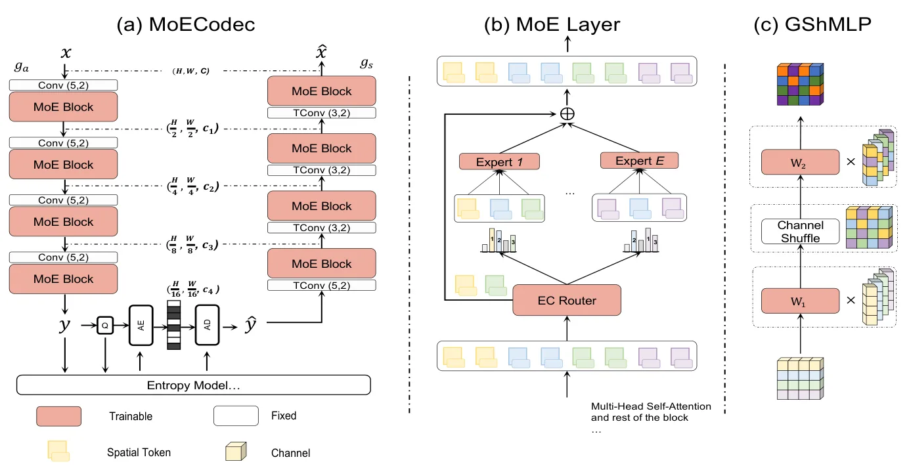

MoECodec：面向人类与机器联合感知的混合专家图像压缩MoECodec: Image Compression for joint human and machine perception via Mixture-of-Experts
偏图像压缩与机器感知，对前端视觉/机器人带宽受限传输有间接价值，但不是定位或三维重建核心论文。
一句话工作总结
在压缩模型中用 token 级 MoE 做动态计算，让同一图像码流同时服务人眼重建和下游机器感知。
摘要
面向机器视觉的图像压缩需要同时服务多种下游任务，传统任务专用设计或外挂式迁移方法部署成本高且计算模式静态。MoECodec 在 transformer 压缩模型的 FFN 层中引入 token-wise Mixture-of-Experts，使计算按输入内容和任务目标动态分配。为稳定路由，作者结合 expert-choice routing 与空间 total variation 正则，鼓励空间连续的专家分配，并提出轻量 Group Shuffle MLP 控制参数增长。实验显示其在图像重建和机器任务上均优于基线。
Image compression for machines calls for a unified codec that serves multiple downstream vision tasks. Existing approaches either adopt task-specific end-to-end designs, raising parameter and deployment overhead, or rely on transfer-based adaptations that remain externally attached and heuristic task design. A key limitation shared by both lines of work is their largely static computation pattern, which applies similar transformations across tokens despite the fact that different image regions exhibit markedly different semantic importance and complexity for machine perception. We propose MoECodec, a token-aware image compression framework that supports multiple downstream tasks within a single model. MoECodec replaces the FFN layers in transformer-based compression model token-wise Mixture-of-Experts (MoE), enabling dynamic, token-level computation conditioned on the input content and task objective. To make MoE effective in compression model, we introduce a stable routing strategy that combines expert-choice routing with spatial total variation regularization to encourage spatially coherent assignments, and we propose a lightweight expert architecture, Group Shuffle MLP (GShMLP), to control parameter growth. Extensive experiments show consistent improvement against baselines on both conventional image reconstruction and machine tasks.
中文解读摘录
- 英文题名：Scene-Level Heterogeneous Physics Simulation with 3D Gaussian Splats
- 作者：Xiaoyang Liu, Shangzhe Wu, Kai Han
- 类别/来源：cs.GR, cs.AI, cs.CV；rss:cs.GR；采集 score=12；阅读优先级=9.2/10。
- 一句话总结：把 3DGS、网格和流体统一抽象为物理粒子，使捕获场景中的高斯资产能够参与真实交互和非刚体变形。
- 为什么值得看：与 3DGS 场景表示、交互式三维资产和机器人仿真高度相关；亮点在于从渲染表示跨到统一物理表示。需后续确认开源计划、运行成本和复杂真实场景鲁棒性。
- 标签：3DGS、物理仿真、场景级交互、非刚体变形
- 链接：abs / PDF
图表/页面预览
{kind=link}

{kind=link}
